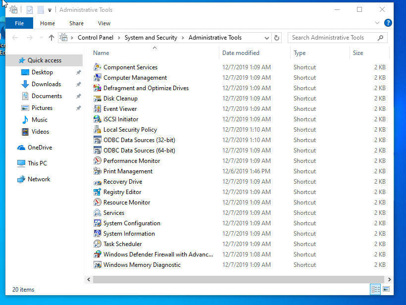
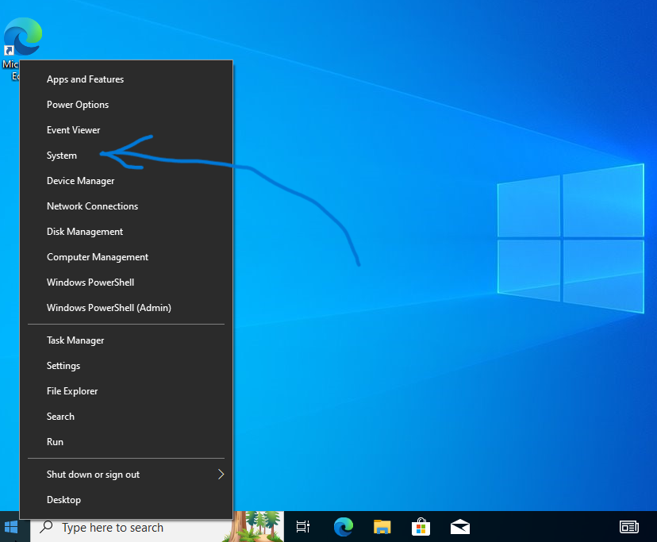
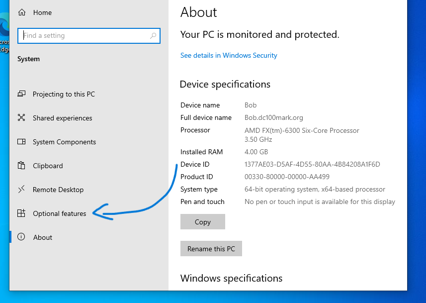
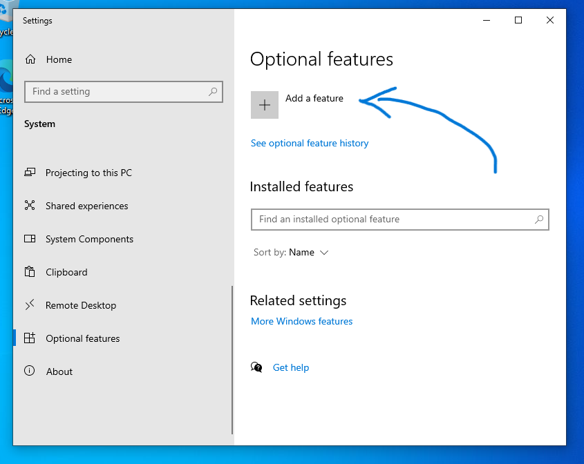
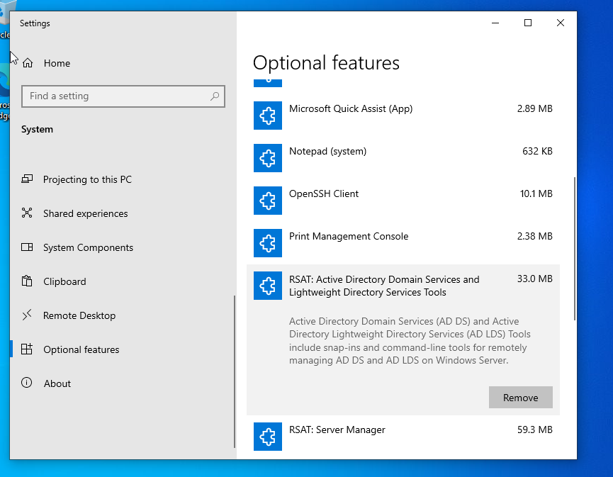
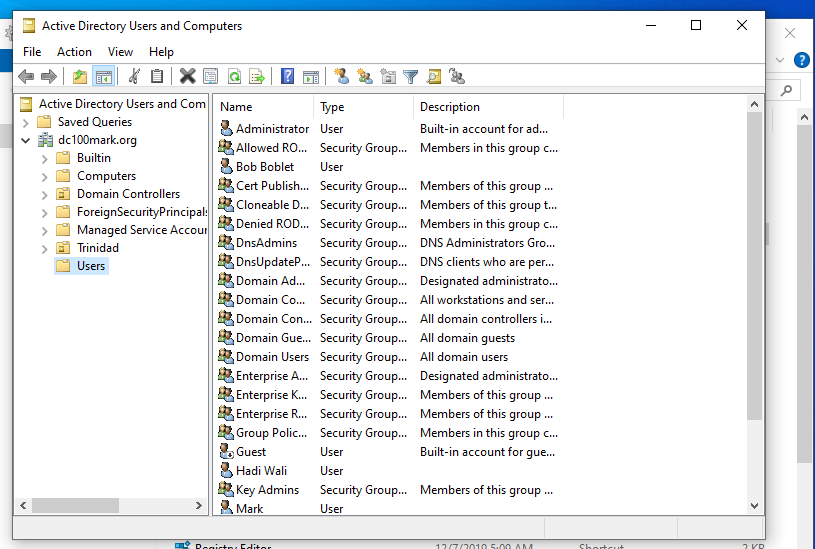

Installing Active Directory feature to a Client Machine
Prerequisites
client machine added to a domain controller
Steps:
- In windows searchbar type adm and click Windows Administrative Tools
- Observe that there is no shortcuts relating to Active Directory

- right click the windows button and click System

- scroll down the left side and click Optional Features

- on the right side, click Add a Feature

- scroll and install the following
- RSAT: Active Directory Domain Services and Lightweight Directory Services Tools
- RSAT meaning: Remote Server Administrative Tool

- now type adm in windows search bar again
- and click Windows Administrative Tools
- observe that Active Directory features are now installed

- click on Active Directory Users and Computers
- AD can now be updated remotely via this client machine
